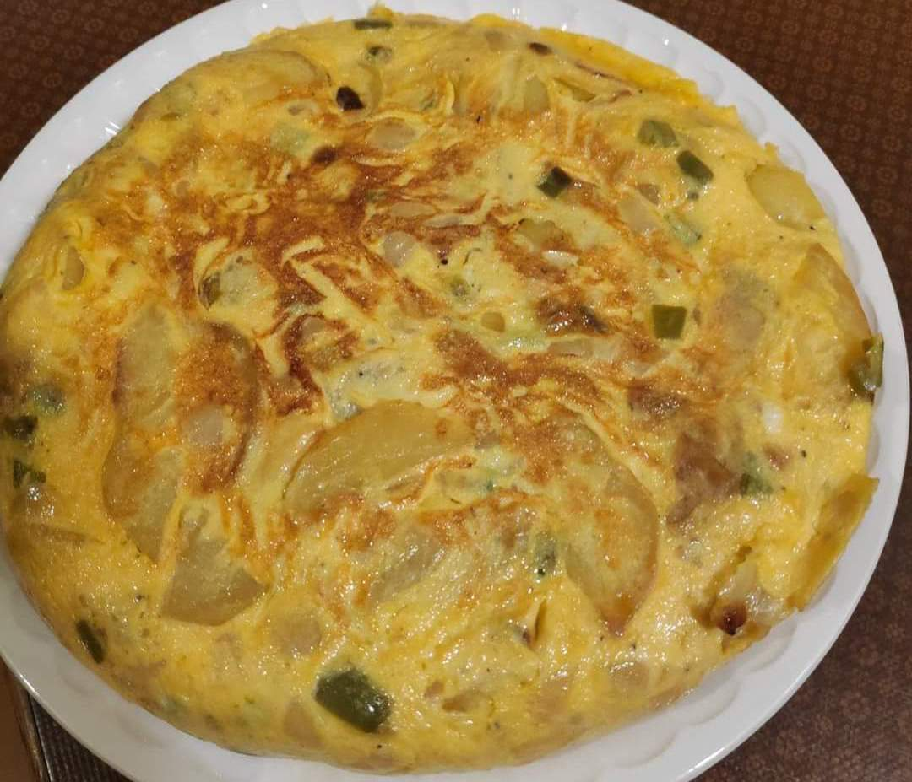

Welcome to my first Blog!
Today... Potato omelette recipe!
As a typical Basque person, I am used to cooking every single meal except for when I'm really lazy, then I order something. But for a Basque person that would be close to sacrilege. So as cooking is part of my daily routine, I decided to share one of our most typical recipes, which is really easy to make!
So you might have heard about the famous "Spanish omelette" or as we call it in the Basque Country, "potato omelette". On the following recipe you can find the ingredients and step by step directions to make your first super tasty omelette!
Ingredients:
- 6 big eggs (use 7 if you like it saucy)
- 1 small onion
- one green pepper (or yellow)
- 600g of potatoes
- salt and pepper
- 2 glasses of olive oil
- Vegetable bouillon powder (Optional)
Directions:
- Cut the onion, the pepper and the potatoes in medium-size squares. Add salt and pepper. If you want you can add some Vegetable bouillon powder for taste.
- Heat the olive oil in a medium-size pan. You can add a small slice of potato to see when it starts frying.
- When the oil is warm, add all the vegetables and wait until it starts frying. In that moment, lower the fire, put a lid and wait for 30-40 minutes, stiring from time to time.
- When the potatoes turn a little bit brown, take the vegetables out of the pan, rinse them on a rack and save the oil for later.
- Mix the eggs in a bowl, adding some salt and pepper. Then add the fried vegetables to the bowl and mix well.
- Clean the pan with some kitchen paper, and add a bit of the reserved oil (you can keep the rest for the next time you want to cook another omelette). Warm it up in medium heat.
- When the oil is warm, add the mix into the pan. Wait a couple of minutes and use a spatula to detach the mix from the borders.
- Using a plate bigger than the pan we're going to turn around the omelette: Put the plate on top of the omelette, then turn it around so the omelette ends up on the plate. Now slowly and with the help of the spatula put the omelette back into the pan.
- Wait a few minutes so the omelette cooks on the other side and done! Enjoy the amazing dish you just created!

Yes I made this myself! If you get something similar to this at the end, it means you are about to enter Tastyland!